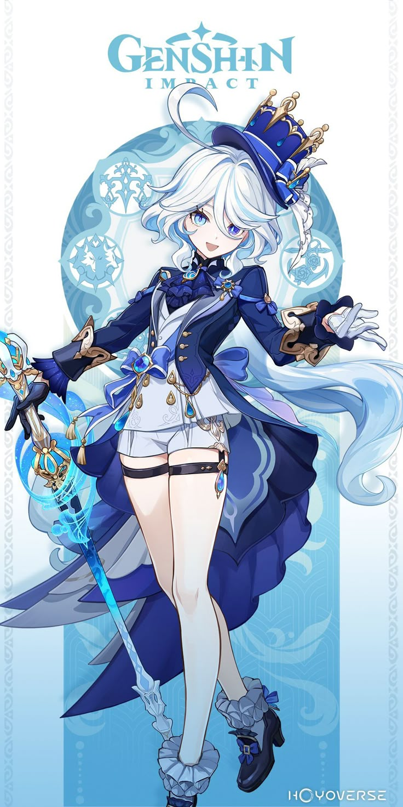
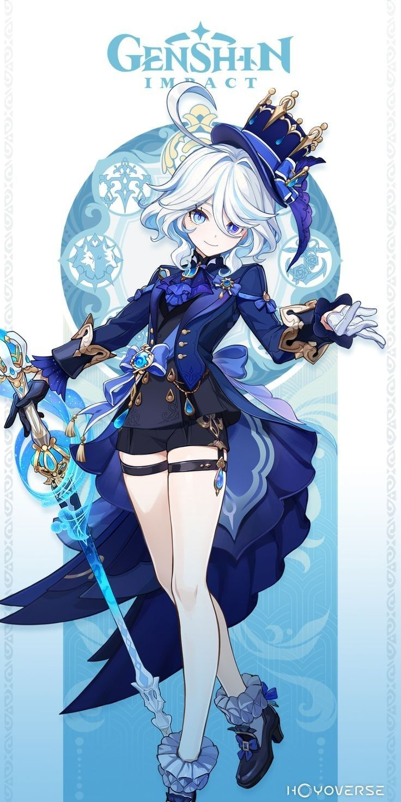
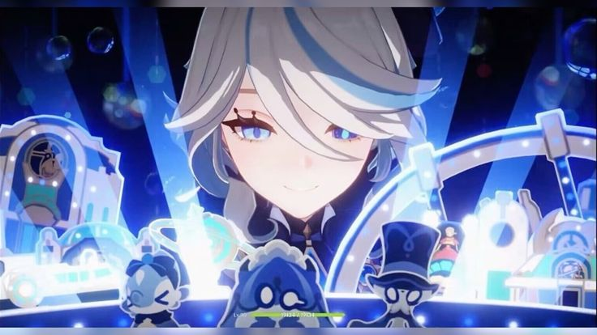
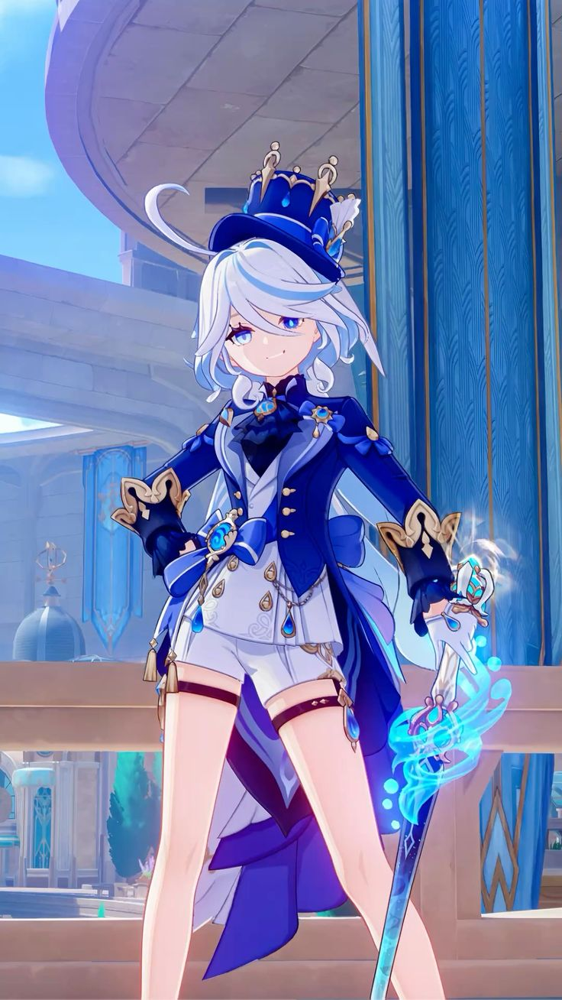
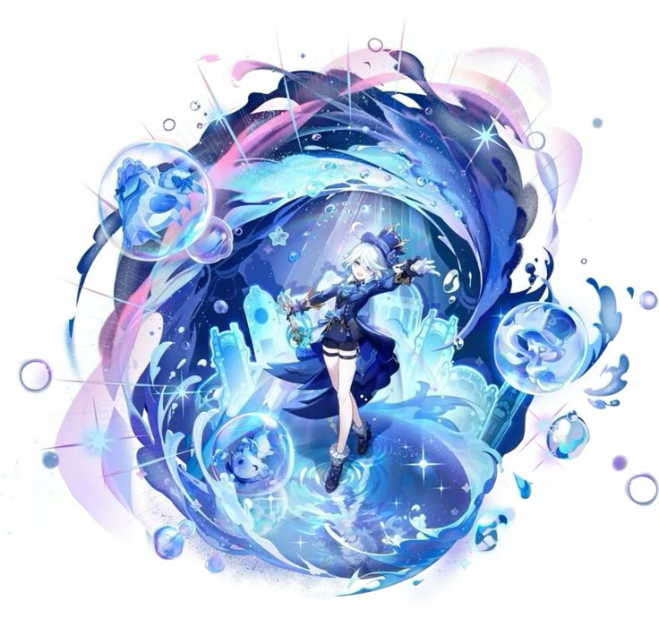

ENDLESS SOLO OF SOLITUDE

Furina Pneuma

Furina Ousia

Elemental Burst
- Court of Fontaine (on profile)
- Opera Epiclese (formerly)
- The Seven (as a representative, formerly)
- Musketeer Pictures
Upcoming: Runs in 1 day
2 years, 11 months ago
Stages
• Regina of All Waters, Kindreds, Peoples and Laws
• Playable Characters
• Hydro Characters
• Characters with Pneuma & Ousia
• Fontaine Characters
Furina de Fontaine[1][2] is a playable Hydro character in Genshin Impact who can alternate between Pneuma and Ousia alignments.
Introduced as the flamboyant and overconfident Hydro Archon, Furina's theatrics are eventually revealed to be a carefully maintained public persona, which she later abandons in favor of living a humbler life as an actress and artistic consultant.
Relatives
Focalors: The former Hydro Archon and her divine counterpart, whose ultimate sacrifice separated divinity from humanity.
Neuvillette: The Chief Justice of Fontaine who holds the complete Hydro authority returned by Focalors.
Voice Actors
English: Amber Lee Connors
Japanese: Inori Minase (水瀬いのり)
Chinese: Qian Tang (钱琛)
Korean: Kim Ha-young (김하영)
Character Story & Lore
The Burden of Divinity: Born from the divinity of Focalors, Furina was tasked with an unimaginable burden: to impersonate the Hydro Archon for 500 years and deceive the Heavenly Principles. Stripped of divine power and left with only human emotions, fears, and fragility, she sat upon the opera throne acting out a role of eternal grace and supreme confidence.
Centuries of Solitude: Day in and day out, night after night, Furina endured crushing loneliness behind the dazzling lights of Opera Epiclese. Burdened by the prophecy foretelling the dissolution of all Fontaine people in primordial seawater, she kept her secret locked deep within her heart, sharing her pain with no one while the guillotine of fate slowly approached.
The Trial and Liberation: When the Traveler arrived in Fontaine and the ultimate trial at Opera Epiclese unfolded, Furina's long act reached its climax. Though she faced public scrutiny, doubt, and emotional breakdown, her sacrifice ultimately allowed Focalors to accumulate enough indemnity power to deceive the heavenly decree, destroying the original Hydro Throne and returning the complete Hydro authority to Neuvillette.
Rebirth and the Vision: Freed from her divine charade at last, Furina fell from grace into the ordinary world as a mortal human. For the first time in centuries, she experienced true freedom, learning to cook, walk the streets unburdened, and rediscover her genuine passion for art and theater on her own terms. It was through this newfound resolve—embracing her true, imperfect humanity with unmatched bravery—that she resonated deeply with the hydro element, ultimately awakening her true self and receiving her very own Hydro Vision.
Archon Quest & Story Quests
Act I & II: Furina presides over trials at Opera Epiclese and engages in high-stakes legal debates against the Traveler.
Act IV & V: The devastating truth behind the prophecy of Fontaine is unveiled, showcasing Furina's immense endurance and sacrifice.
Voice-Overs
Hello: "Ah, you're here. Well, don't just stand there! The stage is set, and the spotlight awaits us!"
Chat - Afternoon Tea: "A cup of afternoon tea paired with exquisite macarons... Ah, Fontaine truly offers the finest luxuries in Teyvat."
Costume & Design
Furina's attire reflects her theatrical background, featuring a dark blue and white opera coat, asymmetric shorts, a petite top hat, and elegant gold ornaments representing her dramatic flair.
Salon Solitaire & Singer of Many Waters
Through her Elemental Skill, Furina summons members of the Salon:
- Mademoiselle Craballetta: Deals Hydro DMG.
- Gentilhomme Usher: Attacks opponents at regular intervals.
- Singer of Many Waters: Heals active characters based on Max HP.
Gallery

In Game Model

Splash Art
Trivia & Facts
- Furina's constellation, Animula Choragi, translates from Latin to "Soul of the Chorus Leader".
- Her English voice actress is Amber Lee Connors, and her Japanese voice actress is Inori Minase.